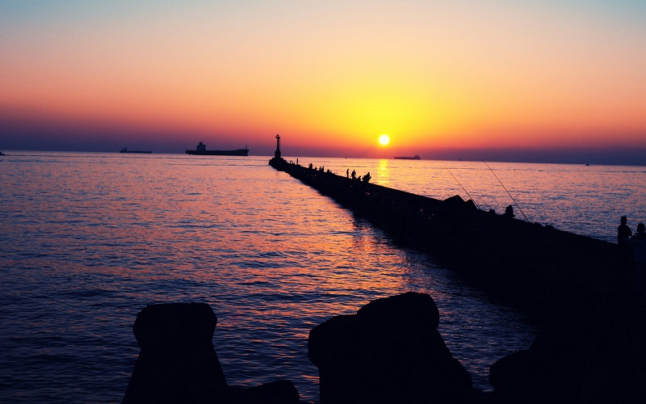
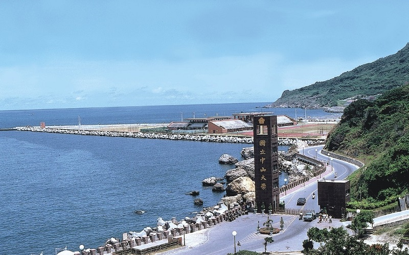
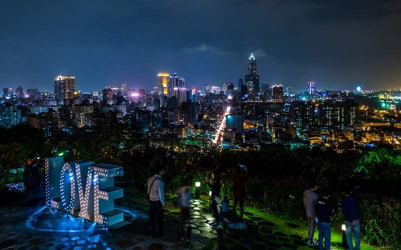
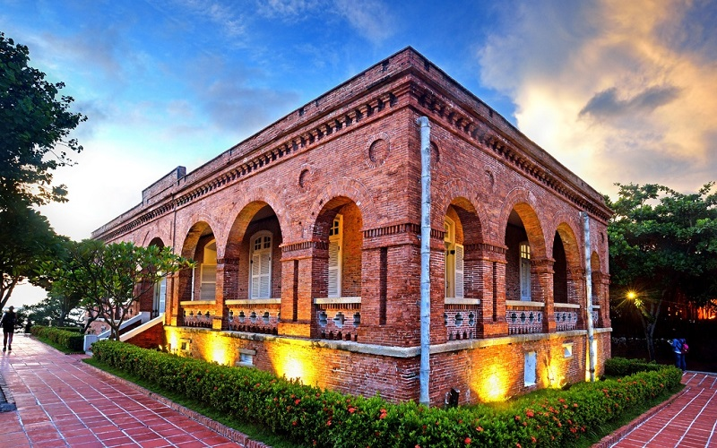

Sizihwan
Kaohsiung City
Gorgeous sunset view
  Sizihwan is known for the brilliant colors of the sunset. This area is also connected with the campus of
National Sun Yat-sen University by the Sizihwan Tunnel . Climbing up to the peak of Shoushan, which is a hill located
at the north-east of Sizihwan,you can overlook the scenery of the bay and its surroundings, providing a good perseptive
for watching the cityscape of Kaohsiung. Besides, in the 19th century, this area served as the strongpoint of trading for
Britain, and therefore Former British Consulate at Takao was built. The architecture is of the style of late Renaissance
and is declared to be a Second Class Historic Site nowadays. To sum up, Sizihwan is the best-recommended place for a
relaxing walk in the evening.
- Best seasons: All year around
- Transportation:
The nearest Kaohsiung Mass Rapid Transit station is the Orange Line's terminus at Sizihwan Station.
Public bus service to the area is available from G-Bus (zh) #99 and O1(橘1) metro shuttle bus.